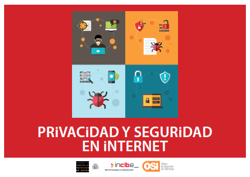

Guías de ciberseguridad¶
Diversas guías sobre ciberseguridad.
Guía de ciberataques¶
Guía de ciberataques a nivel usuario.

- Autor de la guía
- La presente publicación pertenece al Instituto Nacional de Ciberseguridad (INCIBE) y al servicio de la Oficina de Seguridad del Internauta (OSI).
- Sitios web
- Licencia
- Creative Commons Reconocimiento-No comercial-CompartirIgual 4.0 Internacional
Guía de Privacidad y Seguridad en Internet¶
Guía de Privacidad y Seguridad en Internet
- Autor de la guía
- La presente es una publicación conjunta pertenece a la Agencia Española de Protección de Datos (AEPD) y al Instituto Nacional de Ciberseguridad (INCIBE).
- Licencia
- Creative Commons Reconocimiento-No comercial-CompartirIgual 3.0 Internacional
- Sitios web